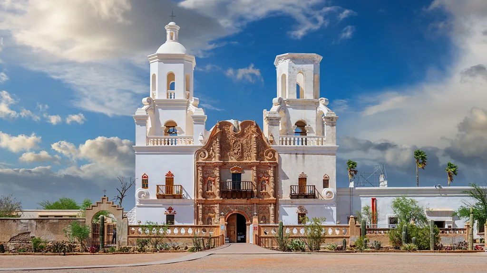
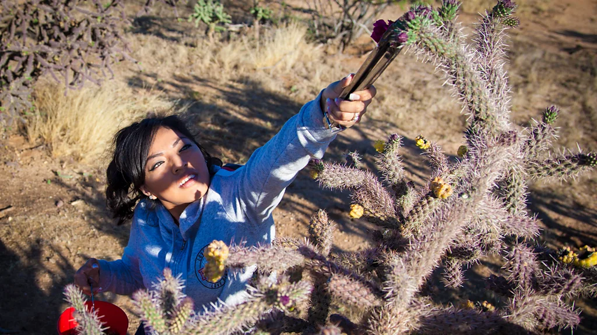
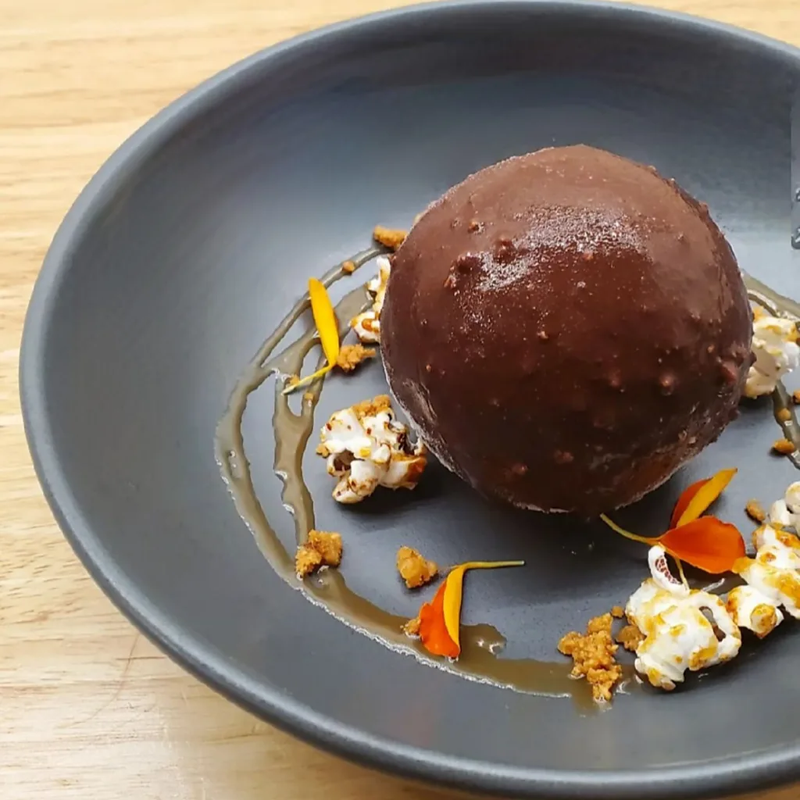
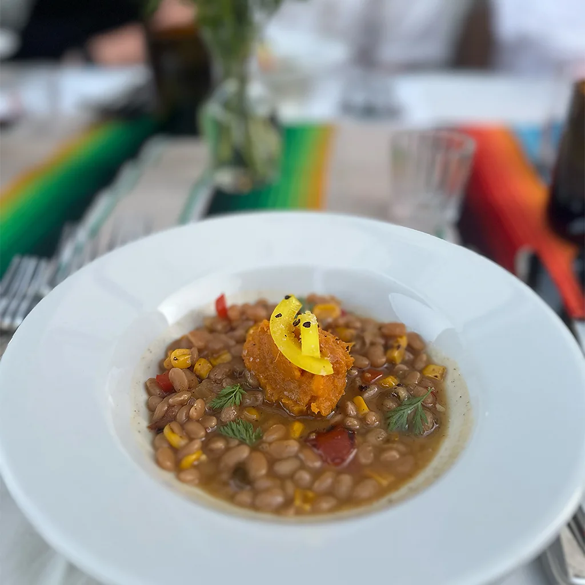
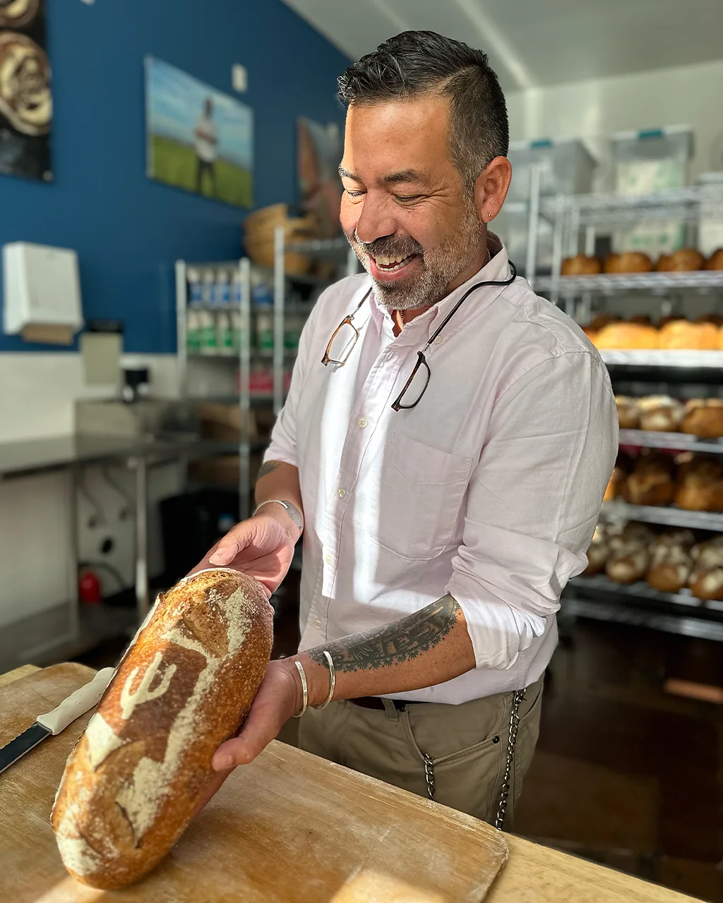

Johnny Motley
(credit:Alamy)
Home to the oldest continuously cultivated soil in the US, this desert-bound city boasts a fascinating food scene all its own.
The shady portico of San Xavier del Bac Mission, a whitewashed oasis set against the cactus-studded mountains of the Sonoran Desert, offered a brief reprieve from Arizona's scorching summer sun as I walked with local chef Ryan Clark. The stucco mission, known as the "White Dove of the Desert", was founded in 1700 when this part of Arizona belonged to New Spain, but Clark was more excited to arrive at nearby San Xavier Co-op Farm on the Tohono-O'odham reservation. "The ground you're standing on is where agriculture in the United States began," Clark told me. "Approximately 4,200 years ago, the ancestors of the Tohono O'odham transitioned from hunting and foraging in the desert to planting corn. These plots hold the oldest continuously cultivated soil in our nation." This year marks the tenth anniversary of when Tucson became the first city in the US to be named a Unesco City of Gastronomy, joining the ranks of Parma, Italy; Chengdu, China; and Lyon, France as a centre of global culinary importance. The Unesco designation was a nod to the city's deep-seated agricultural roots and has transformed Tucson into a culinary travel destination while also inspiring chefs, bakers, brewers and distillers to incorporate the area's traditional ingredients in new ways. Today, alongside iconic staples like birria tacos and Sonoran hot dogs, you'll find American Single Malt whiskey smoked in mesquite, artisanal chocolate made with chiltepin chilli and Michelin-worthy tasting menus showcasing the desert's bounty.
The San Xavier Co-op Farm is located on the oldest continuously cultivated land in the US (Credit: Visit Tucson)
Tucsonan cuisine reflects the many disparate peoples who have called the Sonoran Desert home over the centuries - a colourful stew of influences from Indigenous nations, Spanish settlers, Anglo American cowboys and Chinese railroad workers. As Carolyn Niethammer, the author of the book A Desert Feast: Celebrating Tucson's Culinary Heritage, writes: "Tucsonan cuisine was fusion long before fusion became popular." Since 1983, Native Seeds/SEARCH, a Tucson-based seed bank, has preserved hundreds of near-extinct seeds from the American Southwest, often in partnership with Indigenous communities.In recent years, annual culinary celebrations like the Agave Heritage Festival (10-13 April) and Sonoran Restaurant Week (6-14 September) highlight chefs and distillers working with traditional desert ingredients.
The best of 2025 Tucson, Arizona was named one of BBC Travel's 25 best places to visit in 2025, a list highlighting destinations that are not only welcoming visitors, but using tourism as a force for good. See the full list here.
According to Niethammer, the foundation of Tucsonan cuisine took shape four millennia ago, when Sonoran Indigenous societies foraged the desert for cacti, small game, wild seeds and grasses. "Sonoran hunter-gatherers were remarkable botanists, capable of identifying hundreds of edible plants from this seemingly inhospitable land," Niethammer said. Mashed mesquite pod porridge sweetened with prickly pear fruits was a staple, and cholla cactus buds sustained Indigenous groups during lean times. Cholla buds were crucial staples in March, a time the Tohono-O'odham called "the month without food", due to dwindling food stores and plunging temperatures. To season game like jackrabbits, javelina and mule deer, the Tohono O'odham turned to chiltepin chillies, blisteringly hot peppers and mesquite wood, which infused meat with sweet, piquant smoke.
Chef Kayla Draper serves corn masa ice cream in a chocolate-chiltepin shell (Credit: Kayla Draper)
Many of these ancient ingredients remain mainstays in contemporary Tucsonan kitchens. At The Hub Restaurant and Ice Creamery, chef Kayla Draper, a local resident and member of the Navajo Nation, adds ground mesquite pods into tiramisu to add a nutty, molasses-like flavour to the classic Italian treat. Draper pairs her mesquite tiramisu with scratch-made prickly pear sorbet. A dram from Whiskey Del Bac, a local distillery smoking malt with mesquite wood, adds a final exclamation point to the desert dessert. In homage to the food of her Navajo ancestors, Draper makes blue corn macarons and corn masa ice cream encased in a chocolate-chiltepin shell. Meanwhile, cholla buds are a favourite salad topping for chef Clark. "We call cholla buds 'desert asparagus'. They have a chewy bite like a semi-cooked beet," Clark said. "The clean, herbaceous flavours pair well with a light vinaigrette."
As Niethammer explained, the diet of the Sonoran desert's early residents transformed with the advent of agriculture here in roughly 2200 BCE, which likely came from contact with Mesoamerican cultures. "Corn was the first crop the ancestors of the Tohono-O'odham planted," Niethammer said. "Ancient corn, domesticated from a Oaxacan wild grass called teosinte, was only about three inches long, and the Tohono O'odham still relied on foraging and hunting even after adopting agriculture."
Squash became part of the Sonoran diet around 800 CE and shortly thereafter, beans. "Beans require a heat-resistant vessel to cook, so they likely only became a Sonoran staple after the Indigenous people learned how to make pottery," Niethammer told me. Squash, beans and corn became known as The Three Sisters: a nutritious trio still relished in Tucson from roadside diners to white-tablecloth dining rooms like Maynards Kitchen, located near the the historic Hotel Congress.
Many local restaurants, like Maynards Kitchen, serve modern takes on ancient favourites, like The Three Sisters (Credit: Johnny Motley)
Tucsonan cuisine evolved again in the late 16th Century, when Father Eusebio Kino and a small group of Spanish missionaries settled in the Santa Cruz Valley. Pork, beef and Mediterranean crops like figs, quince, olives, and – most importantly – wheat joined The Three Sisters and desert herbs in Sonoran larders.
"The primary goal for the Spanish was to convert the Indigenous people to Catholicism, and they needed wheat for communion wafers," Niethammer said. "Father Kino planted a desert-adapted grain called [white Sonora wheat]. Today, you'll still find [it], a relative of winter wheat, across Tucson." Low in gluten content, white Sonora wheat is ill-suited for making bread but adds a delightful nutty flavour to biscuits and tortillas. At Barrio Bread, a Tucson bakery specialising in heritage grains, head baker Don Guerra mixes the wheat into his dough to make ciabatta rolls, bolillos (soft, torpedo-shaped bread rolls), and baguettes. In 2022, Guerra won the James Beard Award for Outstanding Baker.
More like this:
- France's most elaborate and macabre recipe
- The English wine that's rivalling Champagne
- The return of Cambodia's banned cuisine
Another major culinary transformation happened when the US acquired what is now Tucson in 1854. Soon after the Gadsden Purchase, in which the US acquired Arizona from Mexico, the Southern Pacific Railroad reached Tucson. Anglo American ranchers poured in, introducing canned fish and meats and cowboy barbecue. Chinese railroad workers also brought new ingredients and dishes.
"Many rail workers had been farmers in China, and they pioneered the cultivation of new crops like strawberries, lettuce and soybeans in the [nearby] Santa Cruz Valley," Niethammer said. Adjusting to available ingredients and the palates of their customers, Chinese grocers sold Chinese chorizo, pork sausage seasoned with soy sauce, rice wine and chilli. Today, the annual Chinese Chorizo Festival (held in March), celebrates this Sino-Sonoran sausage in sushi, fried rice and even cocktails.
Barrio Bread's baker, Don Guerra, has won a James Beard Award (Credit: Johnny Motley)
"Tucson may not have as many glitzy restaurants as Phoenix or Scottsdale," Draper told me. "But our food is more distinctive and soulful, and we Tucsonans take pride in our culinary heritage - especially after the Unesco recognition." For visitors eager to learn about Tucsonan cuisine, she recommends tours with Taste of Tucson, which leads gourmet excursions through the city's historic downtown as well as off-the-beaten-track neighbourhoods.
Draper also recommends Zio Peppe, which has been attracting pizza aficionados from across the US with pies made from mesquite-flour and garnished with pickled cholla buds since it opened in 2021. Elsewhere, BATA, one of Bon Appetít's best new restaurants in 2022, has garnered national buzz for its live fire cooking and creative Sonoran dishes like squash ice cream. Tucson's distillers and brewers also are embracing heritage ingredients. Crooked Tooth Brewing Co. crafts a prickly pear sour beer, and on the harder side of the ABV spectrum, Whiskey del Bac produces a Scotch-style whiskey with barley smoked with mesquite wood rather than traditional peat.
On my last night in Tucson, chef Clark and I knocked back a round of prickly pear margaritas at Ventana Canyon before heading to Fourth Avenue, the so-called "heartbeat of Tucson", lined with elegant Mission Revival architecture and boisterous bars. After dark, food carts selling Sonoran hot dogs, a classic late-night snack, congregate here. As the franks sizzled on a small grill and the cook heaped beans, cheese and salsa on a steamed bolillo bun, Clark waxed poetic.
"You see all the culinary layers of Tucson in a Sonoran hotdog: beans and chillies from the Indigenous Sonorans; bolillo buns from the Spanish; and bacon, cheese and tubed meat from Anglo Americans." And Chinese influences? Clark suggested I return next March for the Chinese Chorizo Festival. Spooning pickled jalapenos onto his hot dog, Clark said, "A cheesy dog with beans and salsa: quintessentially American and quintessentially Tucsonan."
Tucson, Arizona was named one of BBC Travel's 25 best places to visit in 2025, a list highlighting destinations that are not only welcoming visitors, but using tourism as a force for good. See the full list, here.